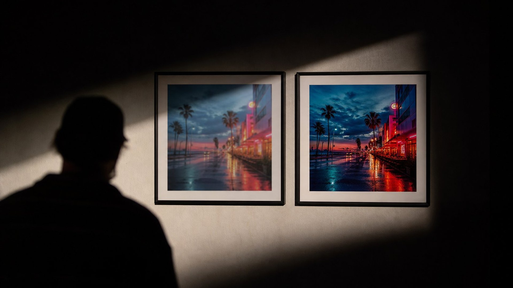
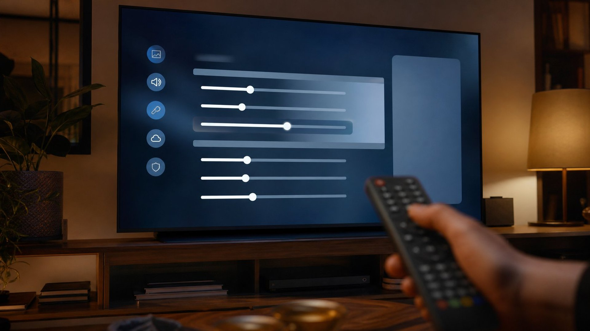
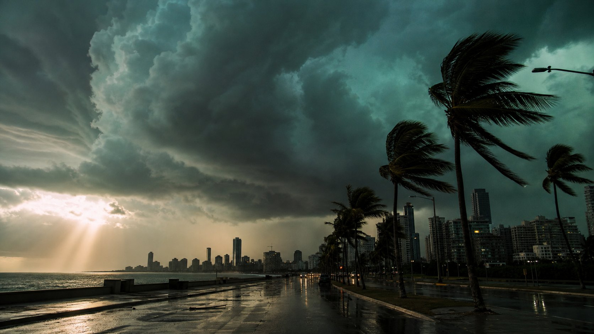
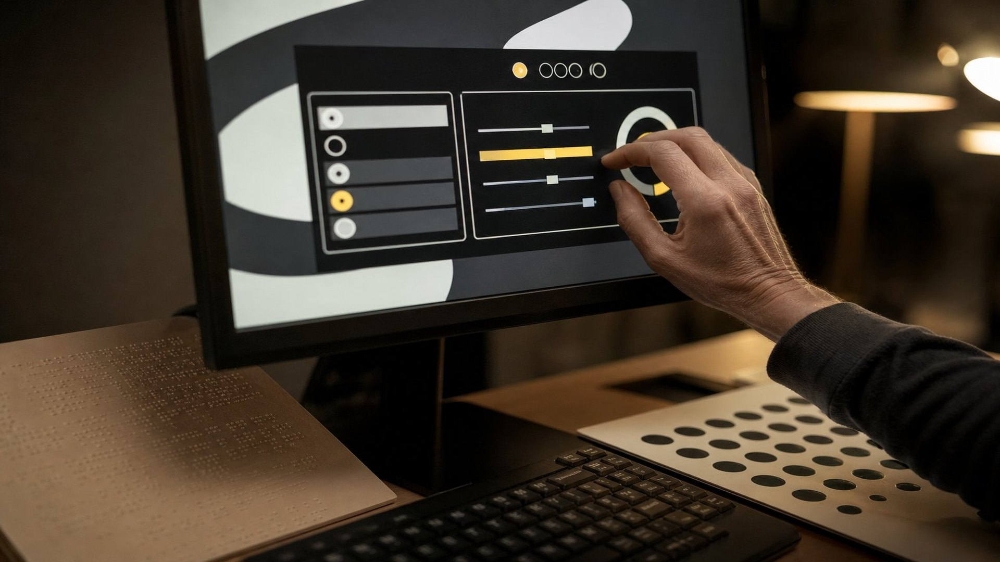
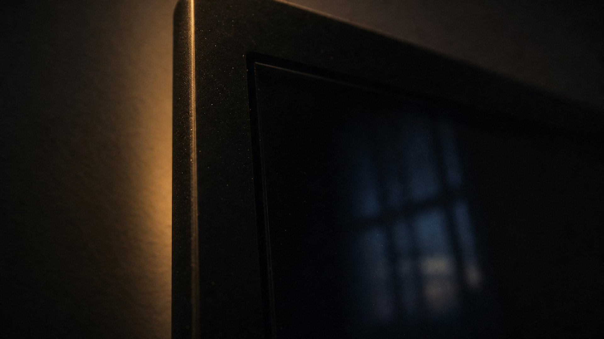
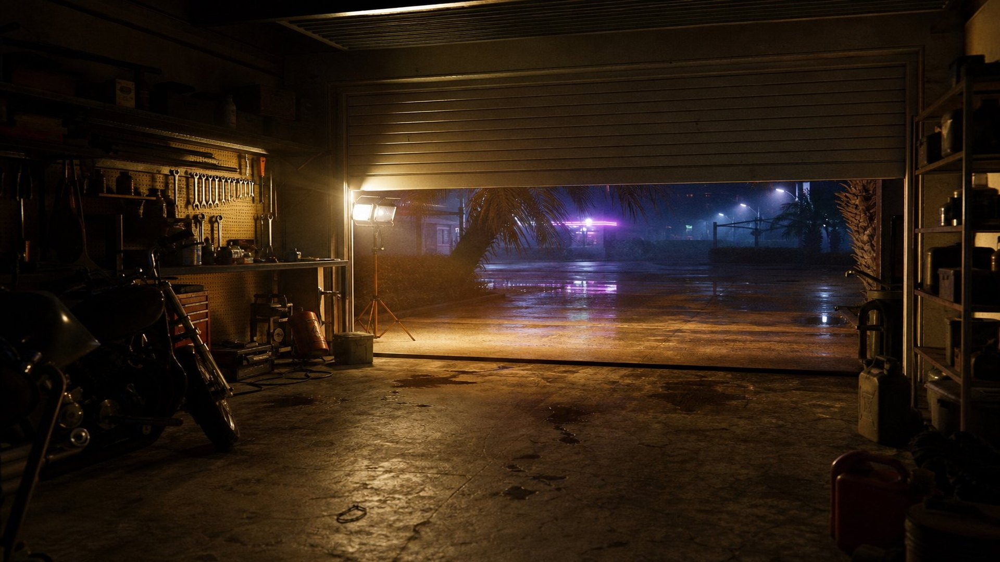
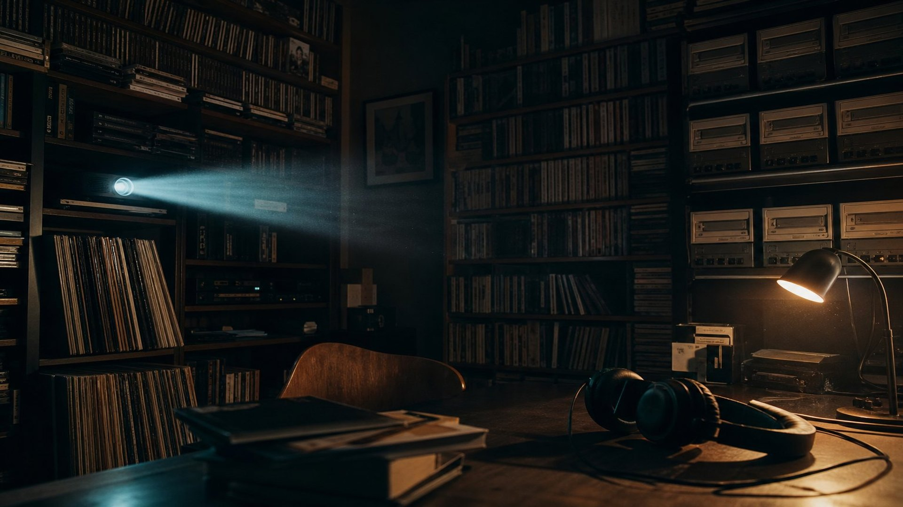

PS5 Pro : PSSR
Suréchantillonnage temporel par apprentissage automatique, propre à la machine. Arêtes et textures lointaines tiennent presque la comparaison avec un rendu natif 4K. S'y ajoutent des ombres tracées par rayons, exclusives. DFF-02
S4 · G7 · Identité visuelle
Tout ce qui fait GTA VI sans être du gameplay : la lumière, le rendu, les cheveux de chaque passant, et la sensation de traverser une ville qui a une logique plutôt qu'un décor.
Tout ne rentre pas dans une catégorie. Cette page rassemble ce qui fait l'identité du jeu sans être du gameplay : le rendu, la lumière, la façon dont Leonida est construite, et ce qu'on ressent en y roulant. C'est aussi la page qui répond à la question qu'on se pose en regardant les vidéos : « c'est vraiment comme ça ? »
Sur PS5 comme sur PS5 Pro. La différence se joue sur l'upscaling, pas sur la résolution de base. DIV-06
Illumination globale et reflets sur les deux consoles ; ombres ray-tracées en plus sur PS5 Pro. DIV-07
Les néons et les reflets dépassent largement les standards habituels du HDR. DIV-09
Digital Foundry a passé vingt-six minutes de démo au crible et en tire un verdict inhabituel : il s'agit du « jeu le plus visuellement marquant de la génération ». Le détail qui explique cette impression n'est pas la résolution — c'est la lumière.
DIV-07DIV-07DIV-09Chaque personnage à l'écran — y compris chaque passant — utilise un système de cheveux dont les mèches sont simulées physiquement : elles réagissent au vent, au mouvement et à l'immersion dans l'eau. C'est spectaculaire, et c'est aussi l'une des raisons pour lesquelles un mode 60 fps n'existe pas sur ces machines. DIV-08
| Élément | État | Détail |
|---|---|---|
| Résolution interne | Confirmé | 1440p sur PS5 et PS5 Pro ; upscaling PSSR sur Pro, qui « passe pour du 4K natif ». DIV-06 |
| Cheveux simulés | Confirmé | Mèches physiques pour tous les PNJ, pas seulement les protagonistes. DIV-08 |
| Ombres RT | PS5 Pro uniquement | Exclusivité de la machine mid-gen. DIV-07 |
| HDR | Confirmé | Pics au-delà de 1 500 nits. DIV-09 |
| Résolution Series S | Non confirmé | Aucune valeur officielle publiée. À ne pas annoncer avant mesure. FAQ-11 |
La résolution interne est identique sur PS5, PS5 Pro et Series X — 2560×1440. Ce qui change, c'est la façon de la monter en 4K, et cela décide de la netteté perçue. La Series S joue une autre partition.
Suréchantillonnage temporel par apprentissage automatique, propre à la machine. Arêtes et textures lointaines tiennent presque la comparaison avec un rendu natif 4K. S'y ajoutent des ombres tracées par rayons, exclusives. DFF-02
Mise à l'échelle spatiale signée Rockstar, sans suréchantillonnage temporel. Conséquence assumée : une image plus douce, surtout sur les détails fins et les feuillages lointains. DFF-02
720p remontés à environ 1080p par AMD FSR 4 — la première utilisation commerciale de ce suréchantillonneur sur la console. L'illumination globale et les reflets tracés restent actifs, les ombres tracées disparaissent. DFF-03
Sur un téléviseur 4K à distance de salon, l'écart le plus visible n'est pas la résolution mais la stabilité : une image plus douce se remarque moins qu'une image qui saccade. D'où le conseil qui revient partout — désactiver l'interpolation et activer le mode Jeu avant de juger. DFF-01


L'analyse technique relève un point qui n'a rien de graphique : l'architecture des quartiers, les infrastructures routières et la disposition générale sont jugées remarquablement crédibles. On ne traverse pas un décor, on traverse une ville qui a une logique — un centre dense, des axes, des zones qui sentent l'argent et d'autres qui sentent la rouille. DIV-10
La géographie est lisible : les grands axes racontent la hiérarchie sociale de la carte. Le trajet devient une information.
Néons, reflets, circulation : le jeu nocturne est la vitrine du moteur. Prévoyez vos sessions longues après la tombée du jour.
Orages et averses tropicales recomposent les reflets au sol et l'ambiance sonore. À observer au moins une fois.

Les premiers retours convergent : les valeurs par défaut ne conviennent pas à tout le monde. Trois familles de réglages méritent d'être visitées avant la première mission.
Sous-titres activés et agrandis, taille d'interface augmentée : les dialogues sont parfois couverts par la musique et la radio.
Sensibilité de caméra et aide à la conduite : à ajuster dès la première voiture, sous peine d'attribuer au jeu ce qui relève d'un mauvais réglage.
Bloom et profondeur de champ ne sont pas toujours désactivables ; vérifiez ce que propose votre version avant de juger le rendu.

Une partie de la direction artistique n'est pas optionnelle. C'est un choix, pas un oubli — mais il faut le savoir avant de passer une heure dans les menus à chercher l'interrupteur qui n'existe pas.
Un assombrissement en haut de l'écran ne peut pas être désactivé : c'est l'une des plaintes les plus fréquentes des premières heures, et elle relève du parti pris visuel — cadrage cinéma, attention attirée vers le centre. DIA-04
Bonne nouvelle sur un jeu à 30 fps : le flou de mouvement dispose d'une option. Sur une dalle lente ou un écran OLED, le baisser change nettement le confort, sans toucher au reste de l'image. DIA-04
DIA-02

Cette dernière partie est communautaire par nature : ce sont des impressions partagées, pas des faits vérifiables. Elles sont utiles pour se préparer, pas pour affirmer.
Ce bloc est volontairement replié : il contient des informations qui dévoilent une partie du jeu ou qui ne sont pas confirmées. Ouvrez-le seulement si vous l'acceptez.
SPOILER PRESSE · 18/11

